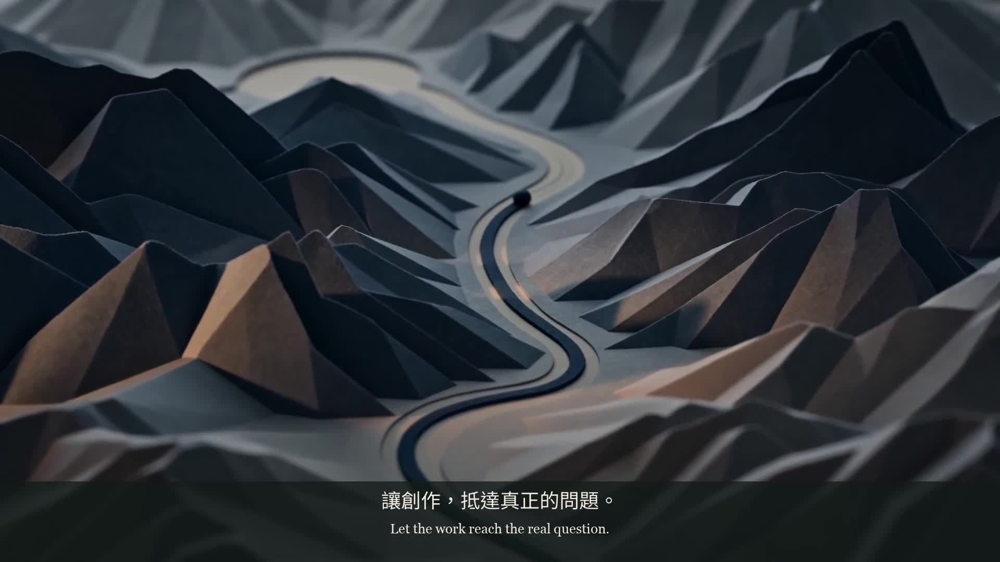
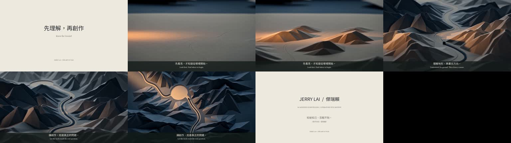

先看見，才知道從哪裡開始。
Look first. Find where to begin.
JERRY LAI × THE ART OF WAR / INDEPENDENT STUDY
Know the Ground
21 SEC · SOUND · 中文 / ENGLISH
AI-assisted literary storytelling

▶ 觀看完整影片 / Watch the film「知彼知己，百戰不殆。」
原句談對敵我情勢的了解。本作把地形作為理解的隱喻：先讓光揭示條件，再讓墨線順勢前進。對照創作時先理解受眾與問題，是本作的延伸，不是原文在談受眾研究。The source concerns understanding opposing and one’s own conditions. Light revealing terrain becomes a metaphor for understanding an audience and a problem before creating. This extension belongs to the film, not the original text.

Look first. Find where to begin.
Understand the ground. Then draw a course.
Let the work reach the real question.
以上字幕為本作原創敘事。古文原句與出處另列，並非逐句翻譯整篇兵法。
先揭示紙地形，再讓墨線沿谷到達圓形空地，將「觀察先於表達」排成清楚的視覺順序；文案不把比喻當成已完成的受眾研究。Revealing the paper terrain before an ink line follows its valley gives observation a clear place before expression. The copy does not present the metaphor as completed audience research.
以光線逐步揭示紙製地形；墨線沿谷移動，落在圓形留白，讓因果關係由畫面順序建立。字幕後製，避免模型生成文字。Light gradually reveals a paper landscape; an ink line follows the valley toward a circular clearing. Shot progression establishes the relationship, with typography added in post-production.
選取原句，標示出處，再寫出適合當代觀眾理解的命題。
Seedance 2.0 生成15秒動態素材，加入片頭、Jerry Lai片尾、雙語字幕與環境聲音設計。
完整檔案解碼、聲音串流檢查、逐段抽幀與公開播放檢查。後續可依團隊需求調整節奏。
紙地形是敘事象徵，不是真實市場模型；運鏡中紙張輪廓有生成形變。引文保留原典「知彼知己」的次序。
AI 協作自主作品。文案、提示、動態影像、程式配樂與後製由AI工具協助完成；詳細流程可供面試討論。
環境聲音設計：紙面摩擦、山稜紙紋、鏡頭移動的氣流與開闊空間底聲。
以合成擬音對應畫面動作、鏡頭遠近及左右位置。搭配低音量稀疏泛音、短旋律與緩慢和聲，轉折時進一步收低。環境音為合成擬音，非現場錄音。